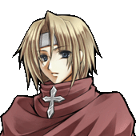
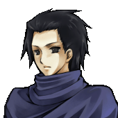
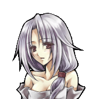
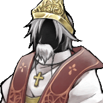
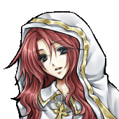

| 登場キャラクター（一部） |
|  |
【クリフ】
クリスノルグの神官騎士。
非常に真面目な性格。
もと修道士でありながら、
神を信じることに疑問を持ち、
人助けのために剣を取る。
堅物な、修道女の妹がいる。 |
|  |
【ベズ】
クリスノルグの神官騎士。
クリフよりも柔軟な性格。
山賊から村を守るため、クリフと共に、
いつもたった二人で戦っている。
クリフとベズは、山賊から
「百人殺しの双騎士」と呼ばれ、
恐れられている。 |
|  |
【セシュ】
とある村の主に買われた、
北から連れてこられた奴隷。
村が山賊に襲われた際、クリフに
助けられ、以後、彼を慕うようになる。 |
|  |
【神王】
クリスノルグの王。
『神の代行者』と名乗っているが、
実際は神の名を盾にして、
横暴な振る舞いを続けている。
|
|  |
【聖女アレシア】
クリフにとって、神の正しいあり方を
書に記した、１２０年前の赤毛の聖女。
しかし当時の王は、次第に
影響力を強めるアレシアを恐れ、
最終的に、彼女は国から
追放されてしまったという。 |